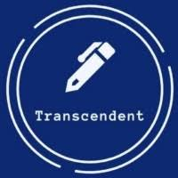
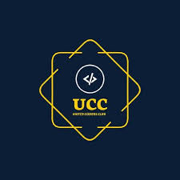
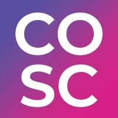
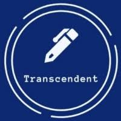
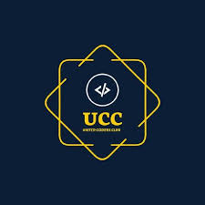
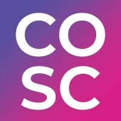

CBIT Clubs
Literary Club
The Literary Club enhances communication skills and creativity through debates, poetry, and storytelling events. It also conducts writing workshops, quizzes, and book reading sessions to develop a passion for literature among students.
Cultural Club
The Cultural Club promotes music, dance, drama, and various art forms through events and competitions. It helps students express their creativity and showcases their talents in college fests and external cultural meets.
Sports Club
The Sports Club encourages students to participate in various indoor and outdoor games, fostering teamwork and fitness. The club regularly organizes inter-college tournaments and fitness workshops.
Technical Club
The Technical Club encourages innovation and organizes hackathons, coding contests, and tech talks. It also provides opportunities for students to work on real-world projects, collaborate with industry experts, and enhance their programming skills. Members frequently engage in coding bootcamps and participate in national-level technical symposiums.
 




